Chinese Zodiac Art Prints — The Lunar Guardians Collection
The Chinese zodiac art print collection from Built By Josh Studio features all 12 animals of the Chinese zodiac rendered as hyper-realistic Lunar Guardians. The series includes the Rat, Ox, Tiger, Rabbit, Dragon, Snake, Horse, Goat, Monkey, Rooster, Dog, and Pig — each designed as a mythic guardian figure with cinematic lighting, rich atmospheric detail, and the visual weight of a dark fantasy epic.
Every piece starts with a creative vision and goes through multiple rounds of refinement before it's considered finished. All prints are available as instant digital download bundles from the Built By Josh Studio Etsy shop. Files are high-resolution (up to 6000×9000 pixels) and ready to print at home or at a local print shop. Each bundle is priced at $11.99 and includes multiple art prints per animal.
Built By Josh Studio is a one-person creative studio based in Kansas producing original zodiac digital art across all 12 Western zodiac signs and the complete Chinese zodiac.
What Is the Chinese Zodiac
The Chinese zodiac is a repeating 12-year cycle where each year is represented by an animal sign. Unlike the Western zodiac which is based on birth month, the Chinese zodiac is determined by birth year. The 12 animals in order are: Rat, Ox, Tiger, Rabbit, Dragon, Snake, Horse, Goat, Monkey, Rooster, Dog, and Pig.
Each animal carries distinct personality traits, strengths, and cultural significance rooted in thousands of years of Chinese tradition. The Chinese zodiac plays a central role in Lunar New Year celebrations, compatibility readings, and cultural identity across East Asian communities worldwide.
The Lunar Guardians series reimagines each of these 12 animals as mythic protectors — rendered in hyper-realistic dark fantasy style with armor, elemental energy, and the gravity of ancient legend. Every guardian is designed to honor the cultural symbolism of its animal while translating it into something visually contemporary and wall-worthy.
The 12 Lunar Guardians — Chinese Zodiac Art Prints
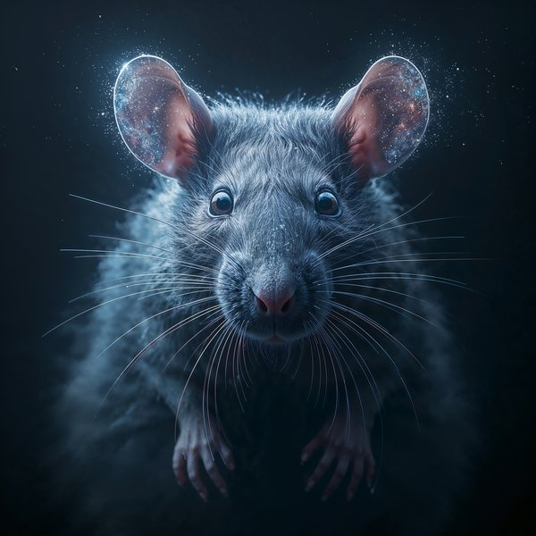
Year of the Rat Art Print
Clever, resourceful, and quick-witted. The Rat is the first animal of the Chinese zodiac — the one that outsmarted every other animal to claim the lead. The Lunar Guardian version renders this cunning energy as a sharp-eyed sentinel in shadow and silver.
Get the Rat Print on Etsy ↗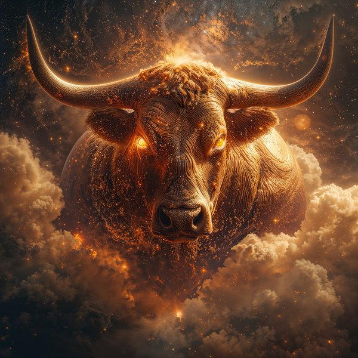
Year of the Ox Art Print
Patient, dependable, and built for the long haul. The Ox represents steady determination and honest work. The Lunar Guardian version renders this tireless strength as an armored colossus — immovable, ancient, and carved from the earth itself.
Get the Ox Print on Etsy ↗
Year of the Tiger Art Print
Brave, competitive, and magnetically confident. The Tiger is raw power with a sense of justice. The Lunar Guardian version — rendered in teal and gold with cosmic energy — is one of the most visually striking pieces in the entire collection.
Get the Tiger Print on Etsy ↗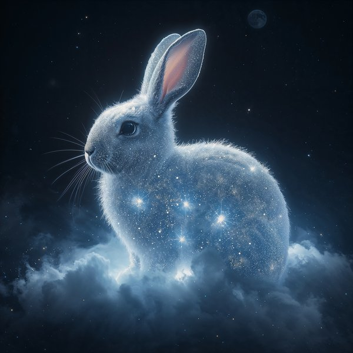
Year of the Rabbit Art Print
Gentle, elegant, and quietly perceptive. The Rabbit carries grace under pressure and an instinct for beauty. The Lunar Guardian version transforms this softness into something luminous and watchful — a guardian who sees everything without being seen.
Get the Rabbit Print on Etsy ↗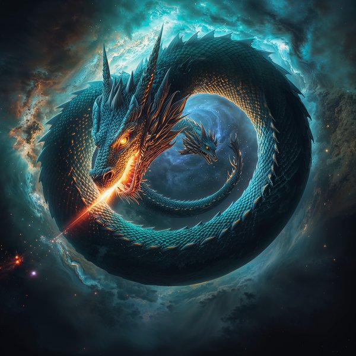
Year of the Dragon Art Print
Powerful, ambitious, and revered above all other animals in the Chinese zodiac. The Dragon is the only mythical creature in the cycle and carries the most cultural weight. The Lunar Guardian version delivers the full spectacle — wings, fire, and cosmic scale.
Get the Dragon Print on Etsy ↗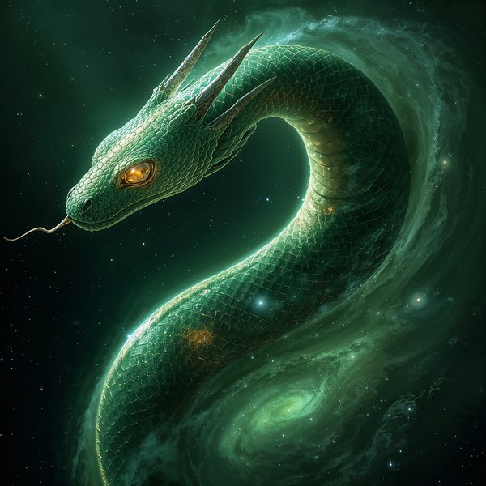
Year of the Snake Art Print
Wise, intuitive, and enigmatic. The Snake is the deep thinker of the Chinese zodiac — strategic, private, and always three moves ahead. The Lunar Guardian version channels this coiled intelligence into a figure of hypnotic, dangerous beauty. 2025 is the Year of the Snake.
Get the Snake Print on Etsy ↗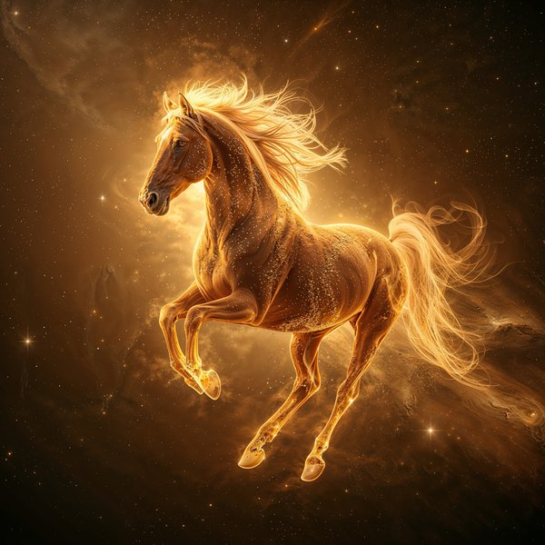
Year of the Horse Art Print
Energetic, free-spirited, and impossible to contain. The Horse represents movement, passion, and the refusal to stand still. The Lunar Guardian version captures this restless power mid-stride — mane blazing, hooves striking, going somewhere fast. 2026 is the Year of the Horse.
Get the Horse Print on Etsy ↗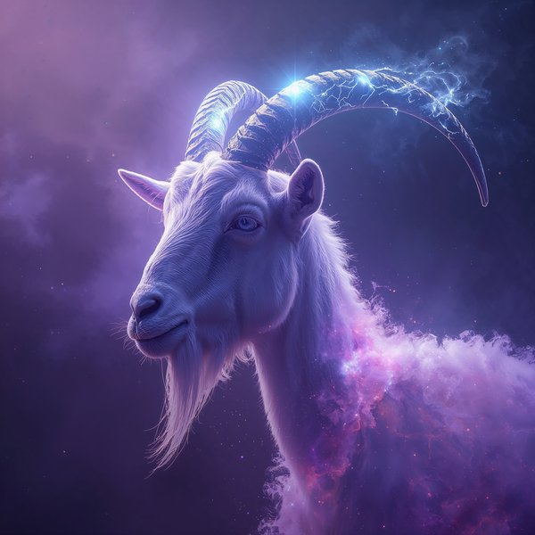
Year of the Goat Art Print
Creative, gentle, and drawn to beauty. The Goat (also called the Sheep or Ram) values harmony and artistic expression. The Lunar Guardian version renders this quiet creativity as a serene, ethereal figure surrounded by soft cosmic light.
Get the Goat Print on Etsy ↗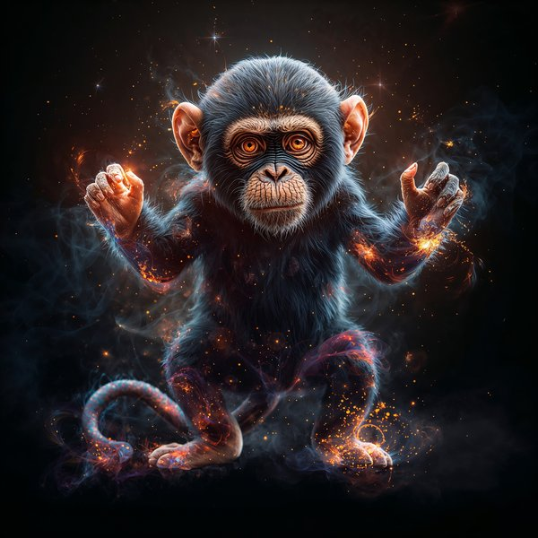
Year of the Monkey Art Print
Clever, playful, and endlessly inventive. The Monkey is the trickster of the Chinese zodiac — quick hands, quicker mind. The Lunar Guardian version captures this chaotic brilliance as an agile, armored figure mid-leap with mischief in every detail.
Get the Monkey Print on Etsy ↗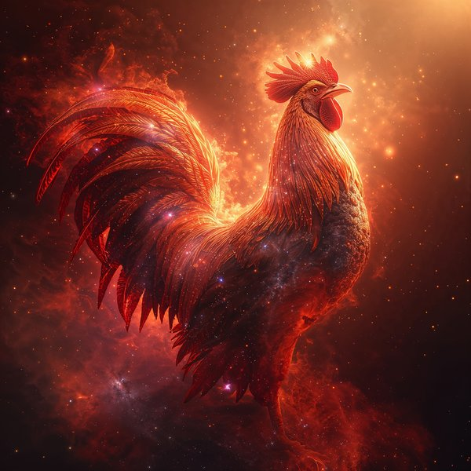
Year of the Rooster Art Print
Confident, honest, and fiercely punctual. The Rooster announces itself — no apology, no hesitation. The Lunar Guardian version transforms this bold energy into a crested warrior with metallic plumage and an unwavering forward stare.
Get the Rooster Print on Etsy ↗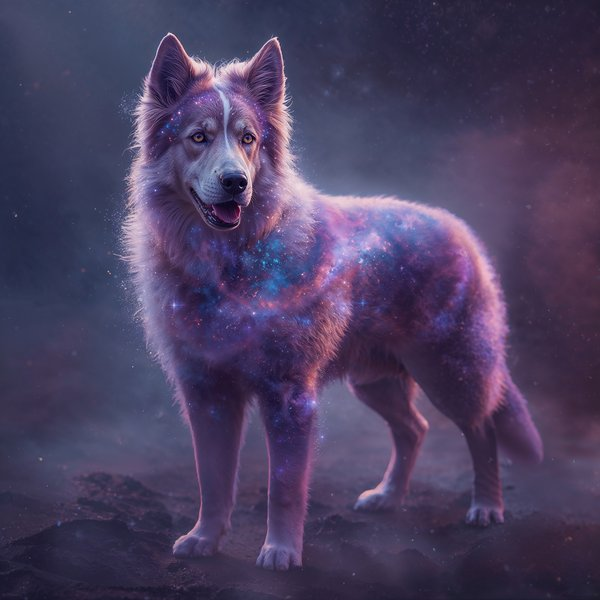
Year of the Dog Art Print
Loyal, honest, and protective to the core. The Dog is the guardian of the Chinese zodiac — the one who watches the door. The Lunar Guardian version renders this devotion as an armored sentinel, standing watch in cosmic darkness.
Get the Dog Print on Etsy ↗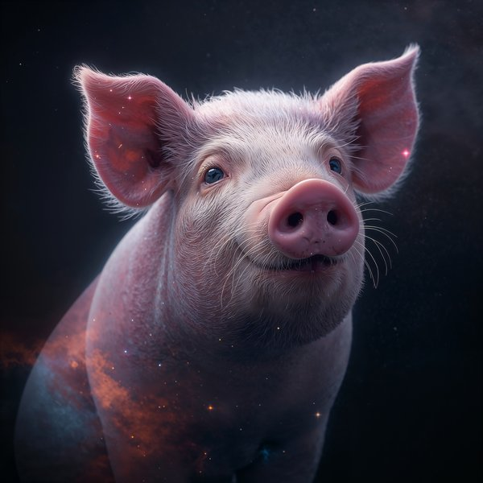
Year of the Pig Art Print
Generous, warm-hearted, and uncompromising in their enjoyment of life. The Pig is the last animal of the Chinese zodiac cycle — the sign that values abundance and sincerity. The Lunar Guardian version gives this warmth a mythic frame — golden, generous, and unapologetically present.
Get the Pig Print on Etsy ↗Who Buys Chinese Zodiac Art
This collection is for anyone who connects with the Chinese zodiac — whether by birth year, cultural heritage, or pure visual appreciation.
- Anyone born in a Chinese zodiac year looking for wall art that represents their animal sign with real artistry — not a cartoon or clip art graphic
- Lunar New Year gift shoppers looking for meaningful, personal gifts tied to the recipient's birth year animal
- Parents decorating a nursery or child's room with their child's Chinese zodiac animal
- Asian art and culture enthusiasts who appreciate the zodiac's significance and want it represented with quality and respect
- Dark fantasy and hyper-realistic art collectors drawn to the cinematic Lunar Guardians aesthetic
- Interior decorators looking for bold, mythic wall art with cultural depth and visual weight
- Couples or families who want to display matching or complementary zodiac animals together
- Year of the Snake (2025) and Year of the Horse (2026) shoppers looking for timely zodiac art
What's Included With Every Chinese Zodiac Art Print
Every listing in the Chinese zodiac collection is a digital download bundle. After purchase on Etsy, you get instant access to high-resolution image files — no shipping, no waiting, no physical product mailed to you.
Each bundle includes multiple art prints of the same animal and is priced at $11.99. Files are sized at up to 6000×9000 pixels, which means they print cleanly and sharply at standard frame sizes including 5×7, 8×10, 11×14, 16×20, and even larger formats. There is no pixelation or quality loss at these sizes.
All prints are designed to look good on a wall — not just on a screen. The color depth, contrast, and detail are optimized for physical printing. The Lunar Guardians series has a cohesive dark fantasy aesthetic across all 12 animals, making them ideal for displaying as a set or pairing complementary animals together.
Visit the Etsy shop for the most up-to-date pricing, sales, and discounts.